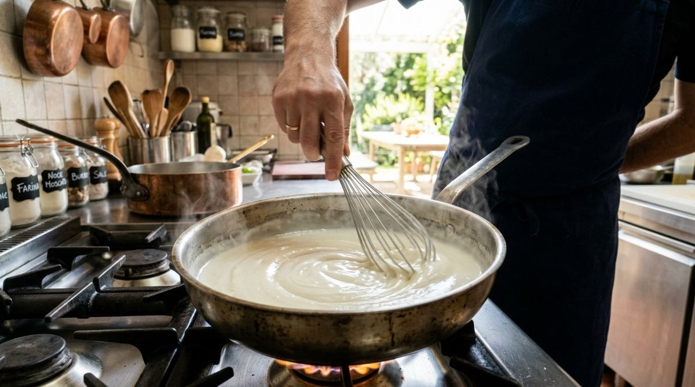

Sauces and creams
Lump-free sauces and creams: techniques and remedies
Culinary science secrets for achieving velvety and flawless textures in every preparation.

Lump-free sauces and creams: techniques and remedies
In the kitchen, the difference between an amateur and a professional preparation often lies in the texture. A velouté, a Béchamel, or a pastry cream with lumps is not only aesthetically unpleasing but also offers an inconsistent mouthfeel, where small pockets of raw starch burst in the mouth, compromising the overall flavour. Understanding how to prevent and resolve this problem requires a brief foray into food technology and the physics of organic polymers.
The science of thickness: starch gelatinisation
To achieve a smooth sauce, it is essential to understand the behaviour of starches (flour, cornflour, potato starch). Starch is composed of two molecules: amylose and amylopectin, grouped into granules that are insoluble in cold water. When we heat a mixture of water and starch, at around 60-70°C, the granules begin to absorb water and swell: this is the process of gelatinisation. If the granules are not well spaced out from one another before this process begins, they clump together, forming the dreaded lumps that trap dry starch inside a waterproof gelled barrier.
The roux method: the importance of physical separation
The classic technique par excellence, used for Béchamel and French mother sauces, is the roux. This method involves mixing the starch (flour) with a fat (butter, oil) before adding the liquid. The fat performs a crucial function: it coats every single starch granule, preventing them from sticking together the moment the hot liquid is introduced. For a perfect result, the golden rule of professional catering is thermal contrast: pour cold liquid onto a hot roux, or hot liquid onto a cold (previously cooled) roux. This slows down immediate gelatinisation, allowing time to disperse the starch uniformly.
Pure starches: the cold suspension technique
When using pure starches like cornflour or potato starch, which have a higher thickening power than flour but a lower gelatinisation temperature, the roux method is not always applicable. In this case, the 'slurry' or suspension technique is used. The starch must be dissolved in a small amount of strictly cold or room-temperature liquid, creating a fluid emulsion. Only then should this mixture be poured into the boiling liquid, whisking vigorously. This ensures that the granules are already separated before the heat causes them to expand.
Practical strategies for a velvety result
Beyond basic techniques, there are small tips that make the difference between success and failure. Here are some key points to keep in mind when preparing a sauce or a sweet cream:
- Always sieve powders: Flour and cocoa tend to clump due to ambient humidity; the sieve is your primary anti-lump ally.
- Use the correct tool: A fine-wired whisk is superior to a wooden spoon, as it increases the cutting surface and mechanically breaks down aggregates.
- Temperature control: Never rush the process by turning the heat up too high; overly rapid gelatinisation is the enemy of homogeneity.
- Order of ingredients: In pastry creams, mixing the starch well with the sugar and egg yolks before adding the hot milk creates a viscous structure that prevents the formation of knots.
The emergency kit: how to fix lumps that have already formed
If, despite precautions, the sauce shows imperfections, modern technology offers effective solutions. The most immediate remedy is using a stick blender (immersion blender). Centrifugal force and high-speed blades can pulverise lumps, returning the sauce to a fluid consistency, provided you act while the preparation is still hot. Alternatively, for more delicate creams, passing them through a fine-mesh sieve (chinois) allows you to separate the velvety part from any solid residue, ensuring impeccable service.
Conclusions
Achieving perfectly smooth sauces and creams is not just a matter of manual skill, but of respecting the laws of food physics. The preventive separation of starch granules using fats or cold liquids remains the most solid strategy. By knowing these principles, every home cook can elevate their preparations to the level of a professional kitchen, ensuring confidence in the process and consistency in the result.